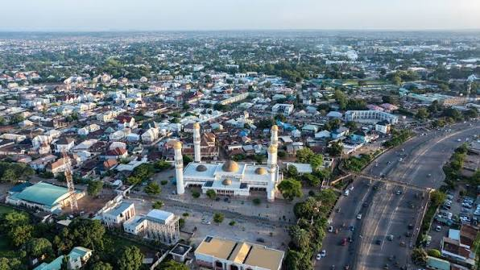

Kaduna Business Networking Forum
September 26, 2026
Connect with entrepreneurs, business owners, and professionals from across Kaduna while exploring new opportunities for collaboration.
Learn More
Connect with local businesses, discover opportunities, and help build a stronger business community in Kaduna.
Join the ChamberSeptember 26, 2026
Connect with entrepreneurs, business owners, and professionals from across Kaduna while exploring new opportunities for collaboration.
Learn MoreOctober 10, 2026
A practical workshop focused on helping local businesses improve their digital presence, customer relationships, and business operations.
Register InterestLoading current weather...
Loading three-day forecast...
Loading member spotlights...